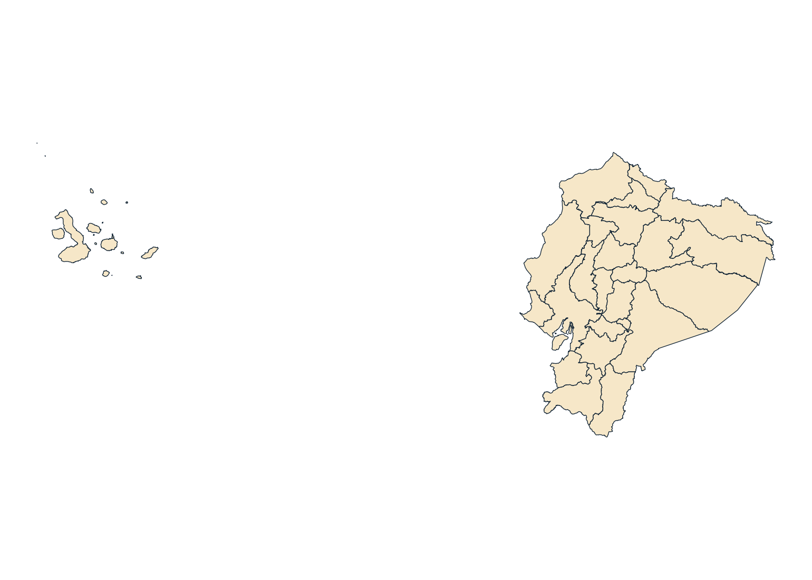
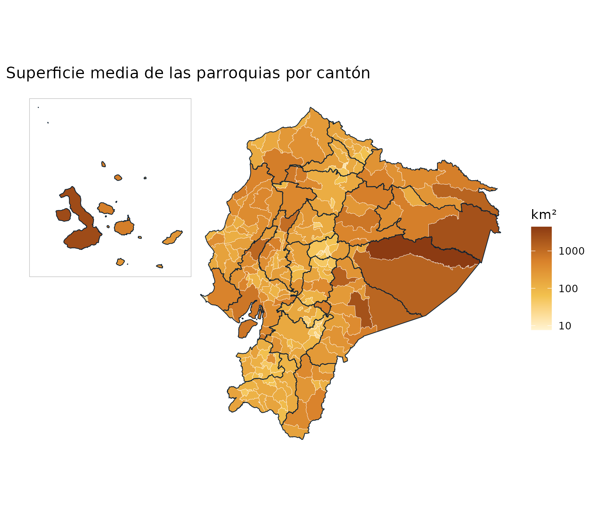
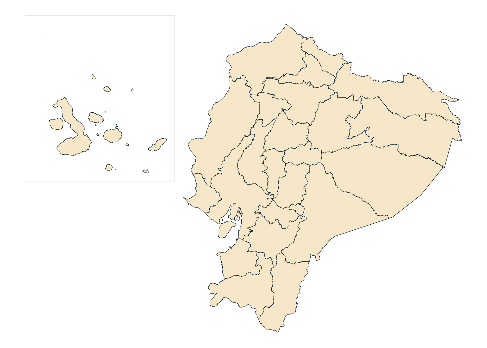

Esta guía recorre las funciones de geoecu con ejemplos que puedes copiar y ejecutar. Todos los mapas se generan con los datos del paquete, sin datos simulados.
1. Qué ofrece geoecu
geoecu entrega las capas de la División Político-Administrativa (DPA)
del Ecuador como objetos sf, con sus
códigos oficiales, listas para mapear y para unir con tus tablas:
| Nivel | Función | Unidades |
|---|---|---|
| Provincia | read_provincias() |
24 provincias y 1 zona en estudio |
| Cantón | read_cantones() |
223 cantones y 2 zonas en estudio |
| Parroquia | read_parroquias() |
1048 parroquias (223 cabeceras cantonales y 825 rurales) y 3 zonas en estudio |
Los datos provienen de la Organización Territorial del Estado del Comité Nacional de Límites Internos (CONALI), publicada como datos abiertos por el Ministerio de Gobierno (licencia CC BY). Los detalles están en el artículo Datos: fuente y procesamiento.
Los tres niveles encajan exactamente: cada cantón es la unión de sus parroquias y cada provincia la unión de sus cantones. Por eso puedes superponer capas sin huecos ni traslapes.
2. Instalación y primera descarga
install.packages("geoecu")Las geometrías no vienen dentro del paquete. La primera vez que pides una capa, geoecu descarga un archivo GeoPackage desde GitHub (3 MB en resolución baja, 39 MB en alta), comprueba que esté completo y lo guarda en caché. Después funciona sin conexión.
geoecu_datos_disponibles() # ¿ya está en caché la resolución baja?
#> [1] TRUE
geoecu_cache_dir() # dónde se guarda
#> [1] "/home/runner/.cache/R/geoecu/datos-v0.3.0"En Linux, instala antes sf desde los repositorios del
sistema para evitar una compilación larga (por ejemplo,
sudo apt install r-cran-sf).
3. Leer las capas
Cada función devuelve un objeto sf en WGS84
(EPSG:4326):
provincias <- read_provincias()
provincias
#> Simple feature collection with 25 features and 4 fields
#> Geometry type: MULTIPOLYGON
#> Dimension: XY
#> Bounding box: xmin: -92.00485 ymin: -5.01518 xmax: -75.18715 ymax: 1.68158
#> Geodetic CRS: WGS 84
#> First 10 features:
#> dpa_provin provincia tipo area_km2 geometry
#> 1 01 AZUAY provincia 8170.524 MULTIPOLYGON (((-79.58575 -...
#> 2 02 BOLÍVAR provincia 3955.740 MULTIPOLYGON (((-78.85256 -...
#> 3 03 CAÑAR provincia 3227.251 MULTIPOLYGON (((-78.77399 -...
#> 4 04 CARCHI provincia 3776.231 MULTIPOLYGON (((-77.76115 0...
#> 5 05 COTOPAXI provincia 6183.837 MULTIPOLYGON (((-78.42733 -...
#> 6 06 CHIMBORAZO provincia 5923.301 MULTIPOLYGON (((-78.44378 -...
#> 7 07 EL ORO provincia 5872.194 MULTIPOLYGON (((-80.00642 -...
#> 8 08 ESMERALDAS provincia 15833.575 MULTIPOLYGON (((-79.74509 0...
#> 9 09 GUAYAS provincia 15905.857 MULTIPOLYGON (((-79.91472 -...
#> 10 10 IMBABURA provincia 4785.149 MULTIPOLYGON (((-78.10539 0...
ggplot(provincias) +
geom_sf(fill = "#F6E7C8", color = "#0F2233", linewidth = 0.2) +
theme_void()
Las columnas son las mismas en los tres niveles, más los códigos de los niveles superiores:
| Columna | Contenido |
|---|---|
dpa_provin, dpa_canton,
dpa_parroq
|
Códigos DPA (texto, con ceros a la izquierda) |
provincia, canton,
parroquia
|
Nombres oficiales, en mayúsculas |
tipo |
"provincia", "cantón",
"cabecera cantonal", "parroquia rural" o
"zona en estudio"
|
area_km2 |
Superficie en km², calculada sobre el elipsoide WGS84 (EPSG:6933) con la resolución alta |
4. Filtrar por territorio
Los filtros aceptan nombres (sin importar tildes ni mayúsculas) o códigos, como texto o número:
read_cantones(provincia = "Loja")[, c("dpa_canton", "canton")]
#> Simple feature collection with 16 features and 2 fields
#> Geometry type: MULTIPOLYGON
#> Dimension: XY
#> Bounding box: xmin: -80.48635 ymin: -4.7473 xmax: -79.09513 ymax: -3.33017
#> Geodetic CRS: WGS 84
#> First 10 features:
#> dpa_canton canton geometry
#> 1 1101 LOJA MULTIPOLYGON (((-79.14861 -...
#> 2 1102 CALVAS MULTIPOLYGON (((-79.60801 -...
#> 3 1103 CATAMAYO MULTIPOLYGON (((-79.26842 -...
#> 4 1104 CELICA MULTIPOLYGON (((-79.96959 -...
#> 5 1105 CHAGUARPAMBA MULTIPOLYGON (((-79.58306 -...
#> 6 1106 ESPÍNDOLA MULTIPOLYGON (((-79.33717 -...
#> 7 1107 GONZANAMÁ MULTIPOLYGON (((-79.40353 -...
#> 8 1108 MACARÁ MULTIPOLYGON (((-80.0349 -4...
#> 9 1109 PALTAS MULTIPOLYGON (((-79.60801 -...
#> 10 1110 PUYANGO MULTIPOLYGON (((-80.12767 -...
nrow(read_parroquias(provincia = 11)) # mismo filtro, por código
#> [1] 94
read_parroquias(canton = "Puyango")$parroquia
#> [1] "ALAMOR" "CIANO" "EL ARENAL" "EL LIMO" "MERCADILLO"
#> [6] "VICENTINO"Si un nombre de cantón se repite en varias provincias, geoecu te lo dice y te sugiere cómo resolverlo:
read_cantones(canton = "Bolivar")
#> Error:
#> ! El nombre 'Bolivar' corresponde a varios/as cantones: 0402 (CARCHI), 1302 (MANABÍ). Usa el código o filtra también por provincia.
read_cantones(provincia = "Manabi", canton = "Bolivar")[, c("dpa_canton", "provincia")]
#> Simple feature collection with 1 feature and 2 fields
#> Geometry type: MULTIPOLYGON
#> Dimension: XY
#> Bounding box: xmin: -80.23704 ymin: -1.04355 xmax: -79.87192 ymax: -0.79915
#> Geodetic CRS: WGS 84
#> dpa_canton provincia geometry
#> 1 1302 MANABÍ MULTIPOLYGON (((-80.00637 -...Y si escribes un nombre que no existe, propone los más parecidos:
read_provincias("Lojja")
#> Error:
#> ! No se encontró la provincia 'Lojja'. ¿Quisiste decir: LOJA?Cabeceras, parroquias rurales y zonas en estudio
El argumento tipo de read_parroquias()
filtra por tipo de parroquia:
table(read_parroquias()$tipo)
#>
#> cabecera cantonal parroquia rural zona en estudio
#> 223 825 3
read_parroquias(canton = "Puyango", tipo = "rural")$parroquia
#> [1] "CIANO" "EL ARENAL" "EL LIMO" "MERCADILLO" "VICENTINO"Las parroquias urbanas no aparecen como polígonos propios: forman parte de su cabecera cantonal, tal como las delimita el CONALI.
Las zonas en estudio son territorios cuyos límites aún no están resueltos. Se incluyen para que el mapa nacional no tenga huecos:
read_parroquias(tipo = "zona")[, c("dpa_parroq", "parroquia", "area_km2")]
#> Simple feature collection with 3 features and 3 fields
#> Geometry type: MULTIPOLYGON
#> Dimension: XY
#> Bounding box: xmin: -80.69712 ymin: -2.6269 xmax: -77.93053 ymax: -0.93145
#> Geodetic CRS: WGS 84
#> dpa_parroq parroquia area_km2
#> 1 139090 ZONA EN ESTUDIO "JARAMIJO-MANTA" 7.705
#> 2 140190 ZONA EN ESTUDIO "SINAÍ-CUCHAENTZA" 19.520
#> 3 900651 ZONA EN ESTUDIO: JUVAL (CAÑAR-CHIMBORAZO) 605.651
#> geometry
#> 1 MULTIPOLYGON (((-80.67187 -...
#> 2 MULTIPOLYGON (((-78.03429 -...
#> 3 MULTIPOLYGON (((-78.53311 -...Para excluirlas de un análisis:
cantones <- read_cantones()
cantones <- cantones[cantones$tipo != "zona en estudio", ]
nrow(cantones)
#> [1] 2235. Resolución y sistema de coordenadas
Hay dos resoluciones:
-
"baja"(por defecto): simplificación de 250 m. Liviana, ideal para mapas, boletines y tableros Shiny. -
"alta": simplificación de 10 m. Para análisis espacial (intersecciones, distancias, conteo de puntos en polígonos).
loja_baja <- read_cantones(provincia = "Loja")
loja_alta <- read_cantones(provincia = "Loja", resolucion = "alta")
c(baja = object.size(loja_baja), alta = object.size(loja_alta))
#> baja alta
#> 59400 774824Para medir distancias en metros en el continente,
usa un sistema proyectado como UTM 17S (crs = 32717). Para
áreas ya tienes area_km2; si calculas
áreas de polígonos propios, usa una proyección de igual área como
EPSG:6933, porque UTM 17S infla la superficie de Galápagos en un 3 %
(ver Datos y fuente):
loja <- read_cantones(provincia = "Loja", crs = 32717)
sf::st_crs(loja)$epsg
#> [1] 32717
head(loja[, c("canton", "area_km2")])
#> Simple feature collection with 6 features and 2 fields
#> Geometry type: MULTIPOLYGON
#> Dimension: XY
#> Bounding box: xmin: 584243.1 ymin: 9475071 xmax: 710810.6 ymax: 9594129
#> Projected CRS: WGS 84 / UTM zone 17S
#> canton area_km2 geometry
#> 1 LOJA 1890.991 MULTIPOLYGON (((705567.1 95...
#> 2 CALVAS 851.174 MULTIPOLYGON (((654500.3 95...
#> 3 CATAMAYO 651.854 MULTIPOLYGON (((692247.1 95...
#> 4 CELICA 521.863 MULTIPOLYGON (((614379.5 95...
#> 5 CHAGUARPAMBA 313.313 MULTIPOLYGON (((657334.9 95...
#> 6 ESPÍNDOLA 516.265 MULTIPOLYGON (((684478.4 94...6. Unir tus datos
geoecu_unir() une una tabla con la capa del nivel
indicado usando el código DPA. Conserva todos los polígonos de la capa,
así que los territorios sin datos quedan con NA y aparecen
en el mapa.
Los códigos que vienen de Excel suelen perder los ceros a la
izquierda (701 en lugar de "0701"); geoecu los
corrige automáticamente:
mis_datos <- data.frame(
cod_canton = c(1101, 1102, 1110, 701), # 0701 = Machala, guardado como número
valor = c(10, 4, 7, 20)
)
mapa <- geoecu_unir(mis_datos, codigo = "cod_canton", nivel = "canton",
provincia = c("Loja", "El Oro"))
mapa[!is.na(mapa$valor), c("dpa_canton", "canton", "valor")]
#> Simple feature collection with 4 features and 3 fields
#> Geometry type: MULTIPOLYGON
#> Dimension: XY
#> Bounding box: xmin: -80.29568 ymin: -4.52616 xmax: -79.10075 ymax: -3.17095
#> Geodetic CRS: WGS 84
#> dpa_canton canton valor geometry
#> 1 0701 MACHALA 20 MULTIPOLYGON (((-79.92783 -...
#> 15 1101 LOJA 10 MULTIPOLYGON (((-79.14861 -...
#> 16 1102 CALVAS 4 MULTIPOLYGON (((-79.60801 -...
#> 24 1110 PUYANGO 7 MULTIPOLYGON (((-80.12767 -...geoecu avisa cuando algo no cuadra:
# Código que no existe en la capa
x <- geoecu_unir(data.frame(cod = c(1101, 9999), n = 1:2), "cod", "canton",
provincia = "Loja")
#> Warning: 1 código(s) de `datos` no están en la capa: 9999
# Códigos repetidos: agrega tus datos antes de unir
x <- geoecu_unir(data.frame(cod = c(1101, 1101), n = 1:2), "cod", "canton",
provincia = "Loja")
#> Warning: Hay códigos repetidos en `datos`: la unión duplicará polígonos. Agrega
#> tus datos por código antes de unir.Limpiar códigos y nombres
Si tu tabla tiene nombres en lugar de códigos, o códigos mal formateados, estas funciones ayudan antes de unir:
formatear_codigo(c(1, 11, "7"), "provincia")
#> [1] "01" "11" "07"
formatear_codigo(c(701, 1101), "canton")
#> [1] "0701" "1101"
normalizar_nombre(c("Cañar", " san José de Chimbo", "CHECA (JIDCAY)"))
#> [1] "CANAR" "SAN JOSE DE CHIMBO" "CHECA JIDCAY"
buscar_dpa("arenal")
#> dpa_parroq parroquia tipo dpa_canton canton dpa_provin provincia
#> 1 111052 EL ARENAL parroquia rural 1110 PUYANGO 11 LOJA
buscar_dpa("santa elena", nivel = "provincia")
#> dpa_provin provincia
#> 1 24 SANTA ELENA7. Mapas temáticos
Un ejemplo completo con datos reales del catálogo: la superficie media de las parroquias de cada cantón.
parr <- read_parroquias()
sup <- aggregate(area_km2 ~ dpa_canton, data = sf::st_drop_geometry(parr),
FUN = mean)
names(sup)[2] <- "km2_por_parroquia"
mapa <- geoecu_unir(sup, "dpa_canton", "canton", crs = 32717) |>
reubicar_galapagos()
prov <- reubicar_galapagos(read_provincias(crs = 32717))
ggplot() +
geom_sf(data = mapa, aes(fill = km2_por_parroquia), color = "white",
linewidth = 0.1) +
geom_sf(data = prov, fill = NA, color = "#0F2233", linewidth = 0.3) +
geom_sf(data = marco_galapagos(prov), fill = NA, color = "grey75") +
scale_fill_gradientn(colours = c("#FFF4D2", "#F2C14E", "#D9822B", "#8C3B12"),
trans = "log10", name = "km²") +
labs(title = "Superficie media de las parroquias por cantón") +
theme_void() +
theme(plot.margin = margin(5, 15, 5, 5))
Consejos:
- Usa
linewidthpequeño (0.05 a 0.2) en el nivel parroquial: son más de mil polígonos. - Para clasificar en intervalos (cuantiles, cortes fijos), crea la
variable con
cut()antes de mapear y usascale_fill_manual()oscale_fill_brewer(). - Para tableros interactivos, la resolución baja carga rápido en leaflet o mapview, con
crs = 4326.
8. Galápagos en mapas nacionales
En un mapa nacional, Galápagos queda lejos del continente y
desperdicia espacio. reubicar_galapagos() lo traslada a la
esquina superior izquierda y marco_galapagos() devuelve un
recuadro para dibujarlo:
prov <- reubicar_galapagos(read_provincias(crs = 32717))
ggplot(prov) +
geom_sf(fill = "#F6E7C8", color = "#0F2233", linewidth = 0.2) +
geom_sf(data = marco_galapagos(prov), fill = NA, color = "grey70") +
theme_void()
Funciona con los tres niveles y con capas unidas con
geoecu_unir(). Si reubicas varias capas para superponerlas,
todas quedan alineadas. El traslado es solo para
visualizar: para medir áreas o distancias usa las capas sin
reubicar.
9. Agregar sin geometrías
El catálogo dpa tiene una fila por parroquia con los
códigos y nombres de los tres niveles. Sirve para agregar datos
parroquiales a cantón o provincia sin leer geometrías:
head(dpa)
#> dpa_parroq parroquia tipo dpa_canton canton dpa_provin
#> 1 010150 CUENCA cabecera cantonal 0101 CUENCA 01
#> 2 010151 BAÑOS parroquia rural 0101 CUENCA 01
#> 3 010152 CUMBE parroquia rural 0101 CUENCA 01
#> 4 010153 CHAUCHA parroquia rural 0101 CUENCA 01
#> 5 010154 CHECA parroquia rural 0101 CUENCA 01
#> 6 010155 CHIQUINTAD parroquia rural 0101 CUENCA 01
#> provincia
#> 1 AZUAY
#> 2 AZUAY
#> 3 AZUAY
#> 4 AZUAY
#> 5 AZUAY
#> 6 AZUAY
# Parroquias rurales por provincia
rurales <- dpa[dpa$tipo == "parroquia rural", ]
head(sort(table(rurales$provincia), decreasing = TRUE))
#>
#> LOJA AZUAY ESMERALDAS MANABÍ PICHINCHA EL ORO
#> 78 61 56 56 54 50
# Agregar una tabla parroquial a cantón
casos <- data.frame(dpa_parroq = c("110150", "110151", "110152", "110250"),
casos = c(5, 2, 1, 3))
casos <- merge(casos, dpa[c("dpa_parroq", "dpa_canton", "canton")])
aggregate(casos ~ dpa_canton + canton, data = casos, FUN = sum)
#> dpa_canton canton casos
#> 1 1102 CALVAS 3
#> 2 1101 LOJA 810. Tablas con códigos de versiones anteriores
geoecu 0.3.0 y anteriores usaban otra capa de origen, con parroquias
urbanas y sin los cantones nuevos. Si tus tablas usan esos códigos,
actualizar_codigo() los convierte al código actual:
actualizar_codigo(c("010101", "010102", "080253", "110152"))
#> [1] "010150" "010150" "080950" "110152"-
"010101"y"010102"(parroquias urbanas de Cuenca) pasan a la cabecera cantonal"010150". -
"080253"(Borbón, antes en Eloy Alfaro) pasa a"080950", cabecera del nuevo cantón Borbón. - Los códigos vigentes no cambian.
Después de convertir, agrega tus datos por el código nuevo, porque varias parroquias anteriores pueden convertirse en la misma:
antigua <- data.frame(cod = c("010101", "010102", "010150"), casos = c(3, 4, 1))
antigua$cod <- actualizar_codigo(antigua$cod)
aggregate(casos ~ cod, data = antigua, FUN = sum)
#> cod casos
#> 1 010150 8La tabla dpa_equivalencias muestra la correspondencia
completa, incluida la proporción del área anterior que cae en cada
parroquia actual:
subset(dpa_equivalencias, principal & cambio == "código distinto",
c(dpa_parroq_anterior, parroquia_anterior, dpa_parroq, parroquia, proporcion))
#> dpa_parroq_anterior parroquia_anterior dpa_parroq
#> 124 030157 RIVERA 900651
#> 357 071203 BALNEARIO JAMBELI (SATELITE) 071252
#> 399 080251 ANCHAYACU 080951
#> 400 080252 ATAHUALPA (CAB. EN CAMARONES) 080952
#> 401 080253 BORBON 080950
#> 403 080255 LUIS VARGAS TORRES (CAB. EN PLAYA DE ORO) 080953
#> 404 080256 MALDONADO 080954
#> 406 080258 SAN FRANCISCO DE ONZOLE 080955
#> 407 080259 SANTO DOMINGO DE ONZOLE 080956
#> 408 080260 SELVA ALEGRE 080957
#> 409 080261 TELEMBI 080958
#> 410 080262 COLON ELOY DEL MARIA 080959
#> 411 080263 SAN JOSE DE CAYAPAS 080960
#> 412 080264 TIMBIRE 080961
#> 860 140157 SEVILLA DON BOSCO 141350
#> 951 160162 SIMON BOLIVAR (CAB. EN MUSHULLACTA) 160167
#> 1035 170203 JUAN MONTALVO 170257
#> 1036 170250 CAYAMBE 170257
#> 1180 200353 BELLA VISTA 200351
#> 1240 220254 TIPUTINI 220250
#> parroquia proporcion
#> 124 ZONA EN ESTUDIO: JUVAL (CAÑAR-CHIMBORAZO) 0.591
#> 357 JAMBELÍ 0.999
#> 399 ANCHAYACU 1.000
#> 400 ATAHUALPA 1.000
#> 401 BORBÓN 0.999
#> 403 LUIS VARGAS TORRES 0.999
#> 404 MALDONADO 1.000
#> 406 SAN FRANCISCO DE ONZOLE 1.000
#> 407 SANTO DOMINGO DE ONZOLE 1.000
#> 408 SELVA ALEGRE 1.000
#> 409 TELEMBÍ 1.000
#> 410 COLÓN ELOY DEL MARÍA 1.000
#> 411 SAN JOSÉ DE CAYAPAS 1.000
#> 412 TIMBIRÉ 1.000
#> 860 SEVILLA DON BOSCO 0.991
#> 951 SHUAR PASTAZA 0.724
#> 1035 JUAN MONTALVO 0.997
#> 1036 JUAN MONTALVO 0.864
#> 1180 BELLA VISTA 0.998
#> 1240 NUEVO ROCAFUERTE 0.82011. Trabajar sin conexión o en servidores
Una vez descargados, los datos se leen de la caché. Para entornos sin
internet (servidores institucionales, Shiny Server, equipos de campo),
descarga los archivos geoecu_dpa_baja.gpkg y
geoecu_dpa_alta.gpkg desde el release
de datos, cópialos a una carpeta e indícala:
geoecu_usar_carpeta("/srv/datos/geoecu")O de forma permanente, en tu archivo .Renviron:
GEOECU_CARPETA=/srv/datos/geoecuPara borrar la caché y forzar una descarga nueva:
geoecu_limpiar_cache().
12. Cómo citar
citation("geoecu")Al publicar mapas o análisis con estas capas, cita también la fuente de los datos, como pide el CONALI:
Comité Nacional de Límites Internos (CONALI), Ministerio de Gobierno del Ecuador. Límites territoriales de la Organización Territorial del Estado interparroquiales, aprobados por el Directorio del CONALI en sesión ordinaria del 24 de marzo de 2022, 17 de enero de 2023 y 13 de marzo de 2026. Datos abiertos, licencia CC BY.